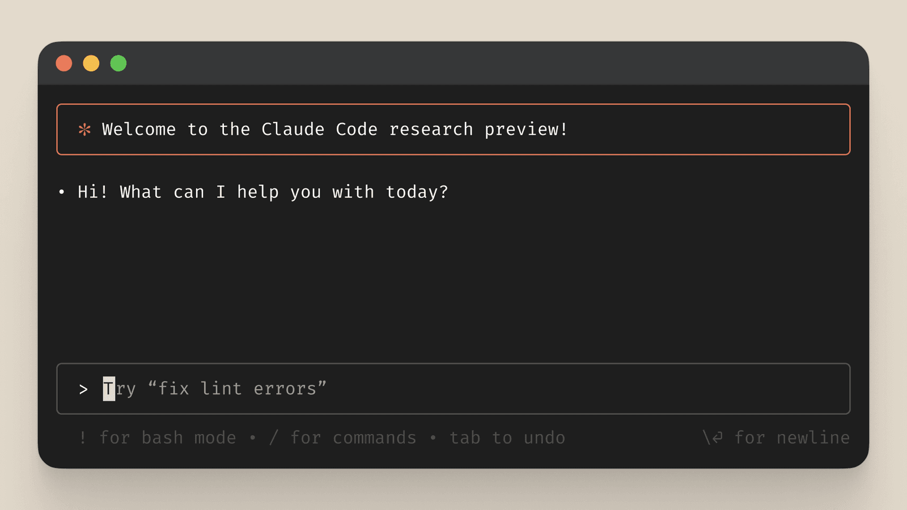

Claude 3.7最引人注目的特性是引入了"混合推理引擎"，这一创新架构结合了两种不同的思维模式，使AI能够像人类一样根据任务复杂度灵活切换思考方式。
在扩展思维模式下，Claude 3.7会：
这种双重思维模式使Claude 3.7能够根据任务复杂度自动或手动切换不同的思考方式，类似于人类大脑的运作方式。在Amazon Bedrock等平台上，用户可以通过控制面板直接切换这两种模式，或通过API参数进行设置。
Claude 3.7的"混合推理引擎"本质上是一种创新的神经网络架构，它结合了两种不同的处理路径：
针对熟悉的模式和简单查询，提供低延迟响应。这一路径优化了处理速度，适合：
针对复杂问题，启动更广泛的神经网络连接，模拟深度思考过程。这一路径适合：
这种双路径设计使Claude 3.7能够在保持高效率的同时，处理更具挑战性的任务。系统会根据输入的复杂性和用户的设置，动态决定使用哪种处理路径，或者两种路径的组合。
| 特性 | Claude 3.7 | 传统大语言模型 |
|---|---|---|
| 思考模式 | 双模式（标准+扩展） | 单一模式 |
| 推理透明度 | 高（可展示思考过程） | 低（黑盒输出） |
| 资源利用 | 动态分配（根据任务复杂度） | 固定分配 |
| 复杂任务处理 | 系统性分解和解决 | 有限的分步能力 |
| 用户控制 | 可调整思考深度和资源 | 有限的参数调整 |
在Amazon Bedrock平台上，用户可以通过以下方式控制Claude 3.7的思考模式：
{
"anthropic_version": "bedrock-2025-02-24",
"max_tokens": 1024,
"messages": [
{ "role": "user", "content": "分析这段复杂代码的性能问题" }
],
"reasoning_mode": "extended", // 可选值: "standard" 或 "extended"
"reasoning_budget": 0.7 // 0.0-1.0之间的值，控制思考深度
}